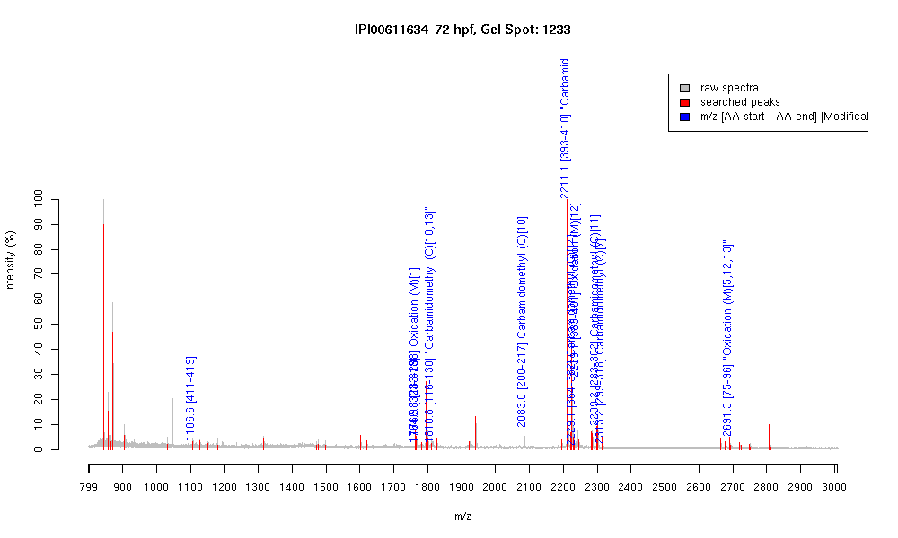

| Name | PREDICTED: similar to zinc finger protein 420 |
|---|---|
| MW | 50624.6 |
| PI | 9.42 |
| Mascot Protein Score | 72 |
| Masses (matched / unmatched) | 11 / 54 |

| Peptide | MZ (calc) | MZ (observed) | Error (DA) | Error (PPM) | Start | Stop | Modifications |
|---|---|---|---|---|---|---|---|
| TFLRPCELK | 1106.6027 | 1106.5637 | -0.039 | -35 | 411 | 419 | |
| QSCLAQHQQIHTGVSK | 1764.881 | 1764.8528 | -0.0282 | -16 | 303 | 318 | |
| MIHTGEKPFTCAQCGK | 1766.8022 | 1766.7848 | -0.0174 | -10 | 283 | 298 | Oxidation (M)[1] |
| THTGERPHKCDQCGK | 1810.8071 | 1810.8145 | 0.0074 | 4 | 116 | 130 | "Carbamidomethyl (C)[10,13]" |
| IHTGEKPYACTQCGKSFR | 2082.9849 | 2083.0151 | 0.0302 | 14 | 200 | 217 | Carbamidomethyl (C)[10] |
| HMLIHTGEKTHICDQCSK | 2211.0103 | 2211.1035 | 0.0932 | 42 | 393 | 410 | "Carbamidomethyl (C)[13,16], Oxidation (M)[2]" |
| IHQRTHTGEKPFTCTQCGK | 2229.0652 | 2229.1338 | 0.0686 | 31 | 364 | 382 | Carbamidomethyl (C)[14] |
| SFTQSSHLNRHMLIHTGEK | 2239.1038 | 2239.1396 | 0.0358 | 16 | 383 | 401 | Oxidation (M)[12] |
| MIHTGEKPFTCAQCGKSFTR | 2299.0781 | 2299.1772 | 0.0991 | 43 | 283 | 302 | Carbamidomethyl (C)[11] |
| SFTRQSCLAQHQQIHTGVSK | 2313.1516 | 2313.1819 | 0.0303 | 13 | 299 | 318 | Carbamidomethyl (C)[7] |
| TLASMFDLRHHMMIHTGEKPYK | 2691.2839 | 2691.282 | -0.0019 | -1 | 75 | 96 | "Oxidation (M)[5,12,13]" |